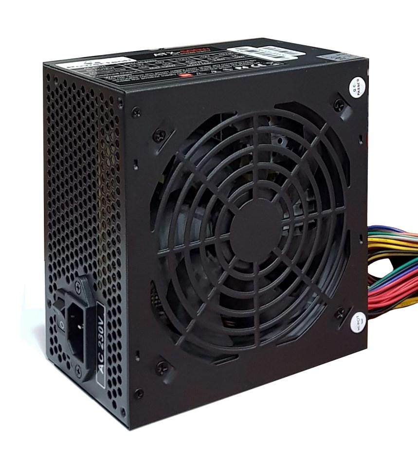
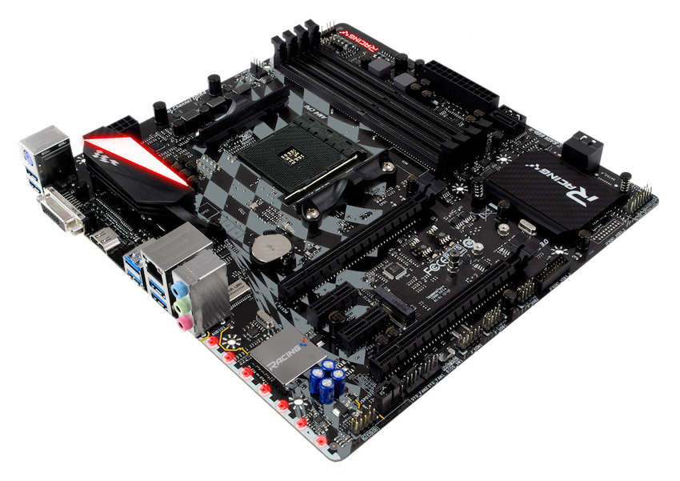
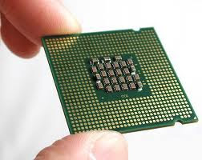
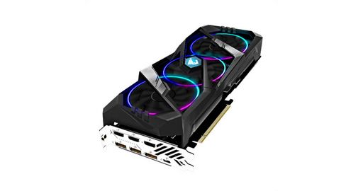
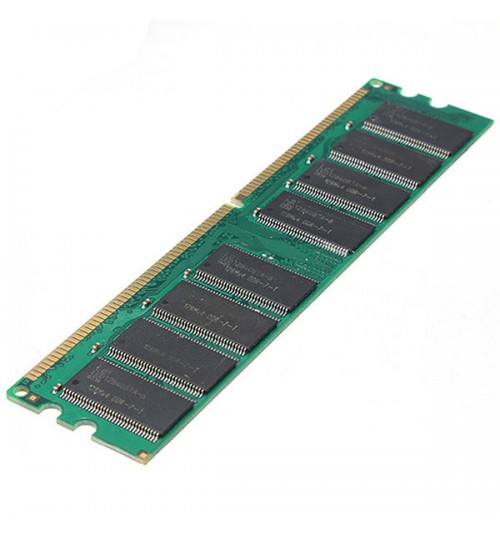
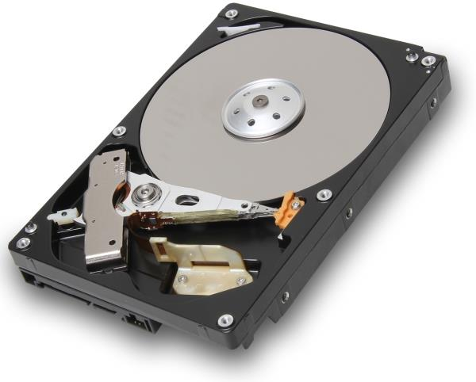

Κουτί Υπολογιστή

Το κουτί του υπολογιστή δεν είναι τίποτα παραπάνω απο ένα κοινό κουτί που είναι εμφανίσιμο και συγκρατεί όλα τα κομμάτια του υπολογιστή. Ανοίγει απο τα πλάγια και έχει κατάλληλες τρύπες για να βιδωθούν πάνω του τα υπόλοιπα κομμάτια του υπολογιστή.
Τα κουτιά των υπολογιστών έχουν πολλές διαφορές μεταξύ τους. Υπάρχουν διάφορα χρώματα κουτιών, διάφορα μεγέθη κουτιών, άλλα έρχονται με προεγκατεστημένους ανεμιστήρες άλλα χωρίς, άλλα έχουν κομψά φωτάκια και πλαϊνά παράθυρα ενώ άλλα είναι πιο λιτά.
Στην πραγματικότητα το κουτί των υπολογιστών δεν είναι απολύτως απαραίτητο καθώς υπάρχει η δυνατότητα να συνδέσουμε τα κομμάτια μεταξύ τους και να τα ακουμπήσουμε σε ένα γραφείο ή ακόμα και στο πάτωμα. Βέβαια αυτό δεν είναι καθόλου πρακτικό γι’ αυτό δεν θα το σχολιάσουμε εδώ παραπάνω.
Μητρική Κάρτα/Πλακέτα

Ίσως αυτό να είναι το πιο σημαντικό κομμάτι ενός υπολογιστή, κάλλιστα θα το αποκαλούσαμε ως την καρδιά του υπολογιστή. Είναι ένα τυπωμένο ηλεκτρονικό κύκλωμα πάνω στο οποίο συνδέονται τα διάφορα κομμάτια του υπολογιστή και τα ελέγχει. Η μητρική έχει πολλά connectors για καλώδια τροφοδοσίας, για καλώδια δεδομένων, για τον επεξεργαστή, για κάρτες γραφικών κλπ.
Επεξεργαστής

Στο socket (υποδοχή) της μητρικής τοποθετείται ο επεξεργαστής. Κάθε επεξεργαστής έχει διαφορετικό socket, όπως 2066, 1150, 1151, am4, tr4 κλπ. , το ίδιο socket πρέπει σαφώς να υποστηρίζει η μητρική για να μην τίθενται θέματα συμβατότητας.
Ο επεξεργαστής λέγεται κεντρική μονάδα επεξεργασίας (CPU: Κεντρική Μονάδα Επεξεργασίας) επειδή χωρίς αυτόν δεν λειτουργεί τίποτα. Όλες οι ενέργειές μας στον υπολογιστή απαιτούν την χρησιμοποίηση του επεξεργαστή γι’ αυτό η επιλογή ενός γρήγορου επεξεργαστή (μεγάλος αριθμός πυρήνων και υψηλές ταχύτητες ρολογιών) καθιστά τον υπολογιστή γρηγορότερο.
Πρέπει να σημειωθεί ότι καθώς οι επεξεργαστές τραβούν ρεύμα προφανώς παράγουν θερμότητα. Αυτό σημαίνει ότι πρέπει να έχει μια ψύκτρα για να διατηρεί θερμοκρασίες κάτω από τις οποίες μπορεί να λειτουργήσει χωρίς προβλήματα. Οι περισσότεροι επεξεργαστές έρχονται στην συσκευασία με μία ψύκτρα όπως οι επεξεργαστές AMD Ryzen όμως άλλοι όπως οι Intel i9 9900k δεν περιέχουν.
Στην περίπτωση οπού είτε θέλετε να αγοράσετε καλύτερη ψύξη είτε ο επεξεργαστής σας δεν περιέχει ψύξη πρέπει να βρείτε ψύκτρα κατάλληλη για το socket σας.
Υπάρχουν τρία είδη ψύξης για τους υπολογιστές:
-Παθητική Ψύξη: Δεν παράγει καθόλου θόρυβο καθώς όπως δηλώνει το όνομα δεν χρησιμοποιεί ανεμιστήρα. Σαφώς δεν είναι τόσο αποτελεσματική στην ψύξη του επεξεργαστή όσο οι επόμενες επιλογές. Για να μειωθεί η θερμοκρασία του επεξεργαστή η ψύκτρα τραβάει την θερμότητα που παράγεται μέσα από μία χάλκινη πλάκα που τοποθετείται πάνω από θερμοαγώγιμη πάστα και
ακουμπάει πάνω στον επεξεργαστή. ‘Έπειτα, αυτή η πλάκα συνδέεται με heatpipes από χαλκό και περιέχουν υγρά και αέρια και όπως μεταφέρεται εκεί η θερμότητα, θερμαίνεται το υγρό στο σημείο εξάτμισης του και το μετατρέπει σε αέριο. Όταν έχει γίνει αέριο μεταφέρεται στο κέντρο των heatpipes μέχρι να κρυώσει, να ξαναγίνει υγρό, και ξαναπηγαίνει στην χάλκινη πλάκα.
-Αερόψυξη: Είναι μια καλή επιλογή για υπολογιστή ανεξαρτήτως της χρήσης του όμως μπορεί να πίανουν πολύ χώρο ορισμένες ψύκτρες και να μην χωράνε στο κουτί. Γι’ αυτό πρέπει να επιβεβαιώσετε ότι χωράει στο κουτί που έχετε επιλέξει. Λειτουργεί με τον ίδιο τρόπο με την παθητική ψύκτρα αλλά χρησιμοποιεί ανεμιστήρες για την ψύξη του υγρού
-Υδρόψυξη: είναι η καλύτερη επιλογή για ψύξη αλλά και η ακριβότερη. Χρειάζονται αρκετό χώρο και το κουτί πρέπει να υποστηρίζει radiators αναλόγου μεγέθους με αυτό της υδρόψυξης. Ο τρόπος λειτουργείας τους είναι απλός, η θερμότητα που παράγει ο επεξεργαστής μεταφέρεται στο υγρό μέσα από μία χάλκινη πλακά, που ακουμπάει στον επεξεργαστή και σε θερμοαγώγιμη πάστα, το υγρό κυκλοφορεί μέσα σε έναν σωλήνα, φτάνει στο radiator όπου οι ανεμιστήρες ψύχουν το υγρό. Τέλος το υγρό επιστρέφει στον επεξεργαστή και ξανά ξεκινάει η ίδια διαδικασία.
Kάρτα γραφικών

Η κάρτα γραφικών είναι υπεύθυνη για τις διεργασίες που αφορούν οπτικά εφέ και εξάγει αυτά τα οπτικά εφέ (εικόνες,UI,GUI) στην οθόνη.
Υπάρχουν όμως δυο είδη καρτών γραφικών οι ενσωματωμένες κάρτες γραφικών (iGPU) και οι discrete (ξεχωριστές) κάρτες γραφικών.
Οι ενσωματωμένες κάρτες γραφικών είναι ενσωματωμένες στον επεξεργαστή. Αυτό σημαίνει ότι ο επεξεργαστής έχει ήδη τσιπ για τα γραφικά και δεν χρειάζεται να αγοράσετε discrete κάρτα γραφικών για να έχετε Output στην οθόνη σας.
Για παράδειγμα οι AMD Ryzen επεξεργαστές που τελειώνει το όνομά τους σε g (Ryzen 5 3400g) έχουν ενσωματωμένα γραφικά και θα χρησιμοποιεί το display adapter της οθόνης. Βέβαια οι επιδόσεις τους είναι πολύ περιορισμένες.
Όπως θα εξηγήσουμε μετά οι ενσωματωμένες κάρτες γραφικών είναι καλές για ελαφριές διεργασίες όπως Office, Multi-media, σερφάρισμα διαδικτύου κλπ. .
Τώρα για τις πιο απαιτητικές διεργασίες όπως gaming, 3D GPU Rendering, Video Editing, Graphic Design χρειάζεται μια ξεχωριστή κάρτα γραφικών.
Μια ξεχωριστή κάρτα γραφικών δεν έχει καμία σχέση με τον επεξεργαστή. Η κάρτα γραφικών αυτή συνδέεται στα PCI Express Slots της μητρικής.
Υπάρχουν δυο εταιρίες που παράγουν τσιπς καρτών η Nvidia και η AMD.
Mνήμες RAM

Οι μνήμες RAM είναι ένα μέσο αποθήκευσης προσωρινών πληροφοριών του υπολογιστή, μπορούμε να το παρομοιάσουμε με ένα ανθρώπινο μυαλό.
Σε αυτές τις μνήμες αποθηκεύονται δεδομένα που χρησιμοποιούνται εκείνη την στιγμή από τον επεξεργαστή. Μπορεί να διαβάσει και να γράψει σε απίστευτα γρήγορες ταχύτητες αλλά μόλις κλείσει ο υπολογιστής χάνονται όλες οι αποθηκευμένες πληροφορίες της.
Σκληροί Δίσκοι/SSD/NVME M.2

Μιας και οι μνήμες RAM δεν είναι ιδανικές να αποθηκεύουμε αρχεία χρειαζόμαστε ένα μέσο να τα αποθηκεύουμε γι’ αυτό υπάρχουν οι σκληροί δίσκοι, οι ssd κλπ. .(Read/Write:100MByte/s)
Οι HDD (hard disk drive) είναι οι πιο αργοί δίσκοι αλλά έχουν την μεγαλύτερη χωρητικότητα σε χαμηλό κόστος
Οι SSD (solid state drive) είναι πολύ πιο γρήγοροι (Read/Write:500MByte/s) αλλά είναι πιο ακριβοί όπως και οι NVME οι οποίοι είναι οι γρηγορότεροι και οι ακριβότεροι (Read/Write:5000MBytes/s)
Τροφοδοτικό
Προφανώς τα κομμάτια μας χρειάζονται ρεύμα για να δουλέψουν, εδώ έρχεται το τροφοδοτικό να βοηθήσει. Τα τροφοδοτικά που κυκλοφορούν είναι διάφορων ισχύων σε watt έτσι είναι πολύ σημαντικό να ξέρουμε περίπου την κατανάλωση του υπολογιστή μας σε watt. Με το παρακάτω υπερσύνδεσμο μπορείτε να υπολογίσετε περίπου τα watts του τροφοδοτικού που χρειάζεστε πατήστε
εδώ
Βέβαια προτείνουμε να είναι ακόμα παραπάνω watt ώστε να μπορεί να υποστηρίξει μελλοντικές αναβαθμίσεις και να μην το τσιγκουνευτείτε γιατί τα φθηνά τροφοδοτικά σε περίπτωση που χαλάσουν μπορεί να επηρεάσουν και άλλα κομμάτια του υπολογιστή.